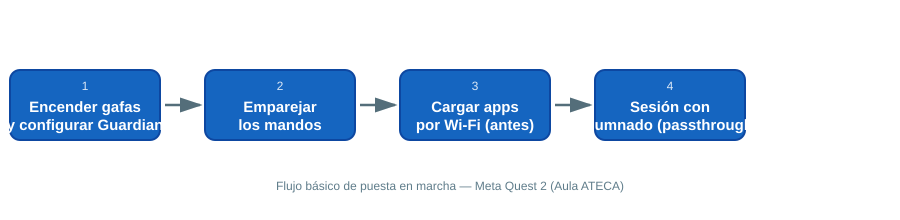

🕶️ Realidad Virtual (VR) y Realidad Aumentada (AR)
Equipo del Aula ATECA para experiencias inmersivas: gafas de VR autónoma (Meta Quest 2) y tablets para AR (Samsung Galaxy Tab A 10.1). Útiles para simulación de procesos, formación técnica, anatomía, orientación/medición, simulacros de emergencias y proyectos de gamificación en cualquier familia profesional.
1. Meta Quest 2
Gafas de realidad virtual autónomas (no requieren PC ni cables). Resolución hasta 3664 × 1920 px, seguimiento completo de movimiento con mandos (Touch Controllers) y audio integrado.
1.1 Primer encendido y configuración

{ width="700" }- Mantén pulsado el botón lateral hasta que se encienda. Sigue el asistente inicial: red Wi-Fi, cuenta Meta y calibración de altura del suelo.
- Delimita el área de juego (Guardian): con las gafas puestas, traza el perímetro libre de obstáculos alrededor del alumnado. Repite este paso cada vez que cambies de aula o de disposición del mobiliario.
- Ajusta la rueda de distancia interpupilar (parte inferior del visor) para cada usuario/a: una mala calibración es la primera causa de mareo o visión borrosa.
- Enciende los dos mandos (se emparejan solos al detectarse cerca del visor). Si no se detectan, mantén pulsados los botones Meta + B durante 5 segundos.
- Entra en Configuración → Dispositivo para revisar batería y forzar la actualización de software antes de cada sesión con alumnado.
1.2 Uso en el aula
- Antes de cada sesión, carga las apps por Wi-Fi con antelación: las descargas grandes en directo pueden saturar la red del aula si hay varios visores a la vez.
- Para actividades de grupo, activa el modo Cámara de paso (passthrough, doble pulsación del botón lateral) para que el profesorado vea el entorno real mientras el alumnado lleva puestas las gafas.
- Usa Emparejamiento de móvil (app Meta Quest en el teléfono del profesor) para hacer cast de lo que ve el alumno en la pantalla digital del aula: muy útil para explicar en directo lo que se ve dentro del visor.
- Limpia lentes y almohadillas faciales entre usos (toallitas específicas para lentes; nunca alcohol puro directamente sobre el cristal).
- Guarda cada visor en su funda con el cable de carga enrollado; etiqueta cada mando con el número de equipo para agilizar la recogida.
1.3 Problemas frecuentes
| Síntoma | Causa probable | Solución |
|---|---|---|
| Imagen borrosa | Distancia interpupilar mal ajustada | Reajustar la rueda inferior del visor |
| El mando no responde | Pilas bajas o desincronizado | Cambiar pilas AA; reemparejar con Meta + B (5 s) |
| No detecta el suelo/Guardian | Suelo muy reflectante o iluminación pobre | Repetir configuración de espacio con luz encendida |
| Apps no se instalan en el aula | Red Wi-Fi saturada | Descargar apps el día anterior, no en el momento |
1.4 Aplicaciones recomendadas
- Meta Horizon Store{target="_blank"} – Tienda oficial de Meta.
- SideQuest VR{target="_blank"} – Apps y juegos experimentales para Quest.
- Familias Profesionales – VRFP{target="_blank"} – Recursos VR organizados por familia profesional.
- Simuladores VR para FP – Aulas ATECA{target="_blank"} – Simuladores pensados para FP.
- SteamVR{target="_blank"} – Compatible con Quest vía Link/Air Link.
- Tilt Brush (AltspaceVR){target="_blank"} – Pintura 3D inmersiva.
- Gravity Sketch{target="_blank"} – Diseño 3D en VR.
💡 Idea de proyecto: usar la Meta Quest 2 para simulacros de coordinación de emergencias (ciclo de Seguridad y Medio Ambiente), inspirado en proyectos reales como INNOFIRE-VR en Aragón. Desarrollo completo en el documento de propuestas de proyectos del centro.
2. Tablets para Realidad Aumentada (Samsung Galaxy Tab A 10.1)
Tablet de gama media (pantalla 10.1″ Full HD, procesador Exynos 7904, 2-3 GB RAM, almacenamiento ampliable hasta 512 GB) usada como visor de apps de AR.
2.1 Puesta a punto antes de la clase
- Instala las apps de AR el día anterior (algunas requieren acceso a cámara y descarga de assets 3D pesados).
- Comprueba la carga de batería: las apps de AR consumen mucho por el uso continuo de cámara y GPU. Ten un cargador USB-C por cada 2-3 tablets.
- Prepara una superficie plana y bien iluminada para el reconocimiento de marcadores/plano; evita suelos muy pulidos o superficies con reflejos.
- Explica al alumnado que debe mover ligeramente el dispositivo al iniciar la app para que el sistema mapee el entorno antes de que aparezca el contenido 3D.
2.2 Apps de AR por ámbito
Energía y agua
- AR Ruler{target="_blank"} – Medición de distancias, áreas y volúmenes con AR.
- Transportador de ángulos AR{target="_blank"} – Medición de ángulos.
- Brújula AR{target="_blank"} – Orientación y navegación.
Sanidad
- Anatomy 4D{target="_blank"} – Cuerpo humano en 4D.
- AR Human Organs{target="_blank"} – Órganos humanos en 3D.
- Essential Skeleton 3D{target="_blank"} – Modelo interactivo del esqueleto.
- The Brain in 3D{target="_blank"} – Cerebro humano en 3D.
- Anatomyou{target="_blank"} – Endoscopio virtual.
📚 Recursos
- 📖 Guía oficial Meta Quest 2{target="_blank"}
- 🎓 VRFP – Familias Profesionales{target="_blank"}
- 🧩 Simuladores VR para FP{target="_blank"}
- 🌐 Web del Aula ATECA (fuente de este manual): Tecnologías | Aula AtecA{target="_blank"}
📷 Pendiente: añadir aquí fotos reales del equipo del aula (visores en su estación de carga, tablets, sesión de alumnado) cuando se puedan tomar in situ.